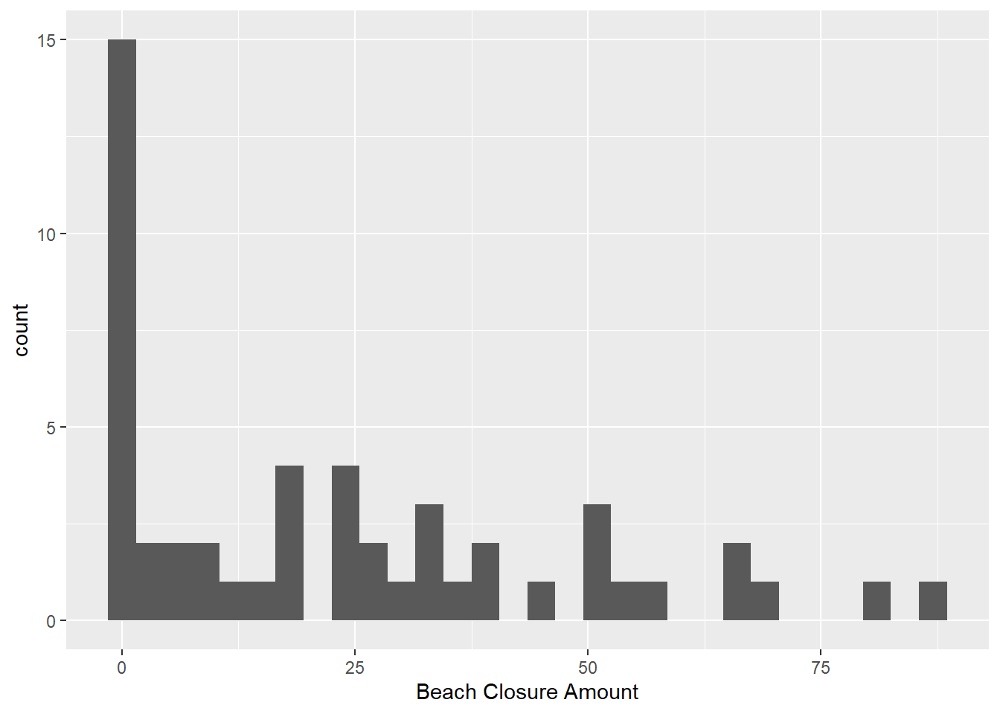

# Load Libraries
library(tidyverse)
library(MASS) # for negative binomial regression
library(here)
library(lubridate) # for datesProject Description
Coastal San Diego County is known for many things; most notable are the world class beaches with surfable waves year-round and sunny days, driving locals and tourists alike to the coast. San Diego is also known for it’s mild climate, boasting warm winters with generally low precipitation. However, the effects of climate change have undoubtedly brought more extreme weather to the region, including precipitation. A 2017 article from UC Merced in conjunction with Univeristy of California, San Diego’s Scripps Institute of Oceanography predicts “the region will have 16 percent fewer rainy days, but 8 percent more rain during large, intense storms, which could lead to more frequent flooding. In addition to property damage and disruption of transportation, flooding leads to our ocean becoming more polluted”. Additionally, the article notes that flooding leads to wetlands’ impaired ability to act as pollution filters for runoff into the ocean. There is some local knowledge of this phenomena already. Growing up in north county San Diego as a surfer, I was taught to not enter the ocean for 24-72 hours after a “big rain”, as the water was likely polluted and to avoid sickness. As climate change continues to affect the world, it is important to understand just how related rainfall is with extreme water quality advisories that warrant closing of a beach, and the potential hindering of an coastline economy. Could rainfall be the key component to predicting beach closures?
The interaction I aim to assess in this blog post is the cumulative amount of rain in inches from 2 coastal San Diego County stations, Oceanside Harbor and San Diego International Airport, compared to the total beach closure days for the beaches in San Diego County. The data was collected on a monthly basis from January 1, 2016 through April 1, 2020. The number of beach closure days (total_closure_beach_days) will be modeled as a function of the total rainfall (rain_inch_total) in the following analysis.
The water quality advisories data was accessed from San Diego County’s online data catalog. The precipitation data for the two collection stations was accessed from the California Department of Water Resources Query System.
Outline
- Load libraries
- Read in data
- Explore and tidy data
- Explore linear regression analysis
- Conduct poisson analysis
- (if poisson analysis suggests) conduct negative binomial regression analysis
- Plot results
- Results interpretation
Load-in Data:
Read in data from data folder:
# Water Quality Advisories
wqa <- read_csv(here("data", "Department_of_Environmental_Health_Beach_Water_Quality_Advisories_20241203.csv")) %>%
mutate(Date = str_replace(Date, "AM", "")) %>%
mutate(Date = str_replace(Date, "12:00:00", ""))%>%
mutate(Date = str_trim(Date))
# Precipitation Data
sd_precip <- read_csv(here("data", "SDG_PRECIP.csv")) Clean Data:
To more efficiently work with the data, let’s convert to lower case, remove any spaces, check the data types of our columns, and remove any columns not needed for this analysis.
# Clean column names, convert to lower case
colnames(wqa) <- tolower(colnames(wqa))
colnames(sd_precip) <- tolower(colnames(sd_precip))
# Remove spaces
colnames(wqa) <- gsub(" ", "_", colnames(wqa))
colnames(sd_precip) <- gsub(" ", "_", colnames(sd_precip))
# Remove preceding zeros in wqa date column
wqa$date <- sub("^0", "", wqa$date)# Check class of date columns
print(class(sd_precip$date))[1] "character"print(class(wqa$date))[1] "character"# Convert from character to datetime
sd_precip$date <- mdy(sd_precip$date)
wqa$date <- mdy(wqa$date)
# Confirm conversion
print(class(sd_precip$date))[1] "Date"print(class(wqa$date))[1] "Date"# Set days equal to the 1st, keep only months since we are doing a monthly analysis
wqa$date <- floor_date(wqa$date, unit = "month")# Remove columns we don't need
wqa <- subset(wqa, select = c(date, total_closure_beach_days))
sd_precip <- subset(sd_precip, select = -c(rain_inches_sd, rain_inches_osm))Now that we have all our data tidy, let’s join our tables together to prepare for further analysis.
# Join tables
wqa_sd_precip <- full_join(wqa, sd_precip, by = "date")Linear Regression Analysis:
Linear regression is a common statistical analysis, let’s see how this model fits our data, and if our data meets the assumptions of linear regression.
# Plot raw data for beginner visualization
ggplot(data=wqa_sd_precip, aes(x = rain_inch_total, y = total_closure_beach_days)) +
geom_point()+
labs(x= "Rain (inches/month)",
y = "Beach Closures (amount/month)",
title = 'Linear Regression of Rain v Beach Closures in San Diego (2016-2020)')+
geom_smooth(method = lm, se = FALSE)+
theme_minimal()We may have jumped the gun with the above plot. Let’s dig into some of the assumptions of linear regression to make sure that this is the best model for our data.
# Is our data normally distributed?
ggplot(data = wqa_sd_precip, aes(x = total_closure_beach_days))+
geom_histogram()+
labs(x = "Beach Closure Amount")
We can see above that the data is not normally distributed; the data is right-skewed. Additionally, our response variable is not a continuous variable, it’s a count variable. This suggests that linear regression is not the best model for this analysis and we should look elsewhere.
A poisson/negative binomial regression assumes the following: over-dispersion, the response variable is a count variable, and the observations are independent, all of which match up with the data.
Begin the Negative Binomial Regression Analysis:
Let’s first check for over-dispersion in the data by fitting a Poisson model. If the variance exceeds the mean, then we can proceed with a negative binomial regression model.
# Fit Poisson model
poisson_model <- glm(total_closure_beach_days ~ rain_inch_total, family = poisson, data = wqa_sd_precip)
# Calculate dispersion statistic
dispersion <- sum(residuals(poisson_model, type = "pearson")^2) / poisson_model$df.residual
# If dispersion > 1, over-dispersion is present
dispersion[1] 18.75829As the dispersion is 18.76, which is greater than 1, over-dispersion is present. We can continue with the negative binomial regression model as the poisson model does not account for over-dispersion.
# Negative binomial regression model
model <- glm.nb(total_closure_beach_days ~ rain_inch_total, data = wqa_sd_precip)
summary(model)
Call:
glm.nb(formula = total_closure_beach_days ~ rain_inch_total,
data = wqa_sd_precip, init.theta = 0.5445777947, link = log)
Coefficients:
Estimate Std. Error z value Pr(>|z|)
(Intercept) 2.63059 0.23037 11.419 < 2e-16 ***
rain_inch_total 0.20965 0.07234 2.898 0.00376 **
---
Signif. codes: 0 '***' 0.001 '**' 0.01 '*' 0.05 '.' 0.1 ' ' 1
(Dispersion parameter for Negative Binomial(0.5446) family taken to be 1)
Null deviance: 69.642 on 50 degrees of freedom
Residual deviance: 60.081 on 49 degrees of freedom
(1 observation deleted due to missingness)
AIC: 407.5
Number of Fisher Scoring iterations: 1
Theta: 0.545
Std. Err.: 0.119
2 x log-likelihood: -401.497 Let’s visualize what the negative binomial regression looks like on a plot.
# Plot it
ggplot(data = wqa_sd_precip, aes(x = rain_inch_total, y = total_closure_beach_days)) +
geom_point(color = "cornflowerblue") +
geom_smooth(method = "glm.nb", se = FALSE, color = "firebrick") +
labs(x = "Rain (inches/month)",
y = "Beach Closures (amount/month)",
title = "Negative Binomial Regression of Rain v Beach Closures San Diego (2016-2020)") +
theme_minimal()Negative Binomal Regression Model and Plot Interpretations:
The expected number of closure days with no rainfall is approximately 2.63 days. For each additional inch of rain, the log count of beach closure days increases by about 0.21 days. For each additional inch of rainfall, the expected number of beach closure days increases by about 23.2%. The y-intercept’s p-value is 0.00376, meaning rainfall is statistically significant in predicting the number of beach closure days.
These numbers are a bit shocking, namely that the one additional inch of rainfall increases a beach closure day by 23.2% and the p-value being very small, and very significant. These suggest that rainfall is likely an appropriate predictor for beach closures.
What to do next? Rain is just one factor likely affecting beach closure days. From San Diego County’s website regarding beach water quality advisories, “Advisories are issued when beach water quality may exceed health standards. Closures are issued when sewage or other chemical spills impact or can potentially impact beach water quality”. Adding in monthly data on sewage and/or chemical spills in the analysis would provide a more comprehensive picture of the factors affecting beach closure days. Additionally, as the UC Merced article states, adding in data on lagoon flooding health may also be an important predictor in beach closure days. San Diego County boasts several lagoons (5 alone in north county!) with many popular surfing beaches at or near the lagoon outlets.
Data biases and limitations present in this analysis was the the omission/absence of monthly rainfall data for other weather stations near the coast in San Diego County, best described by the availability bias. Availability bias states that a distortion may arise from the analysis of data that is readily available, rather than the data that best represents the processes happening. Gaining access and compiling precipitation data for more than two weather stations was a challenge given the time frame of completion for this project. For a more complete analysis, more weather data from the other stations in San Diego county, data of sewage/chemical spills, and lagoon flooding and health data should be included. Sewage/chemical spill data and lagoon health data should be tested for any evidence of omitted variable bias.
Citations:
California Department of Water Resources. CDEC Query Monthly. California Data Exchange Center. Retrieved December 5, 2024, from https://cdec.water.ca.gov/dynamicapp/QueryMonthly
KPBS. (2022, December 28). Swimmers, beware: Rain brings contaminated urban runoff to beaches. KPBS. https://www.kpbs.org/news/environment/2022/12/28/swimmers-beware-rain-brings-contaminated-urban-runoff-to-beaches
San Diego County. April 2, 2020. Beach water quality advisories. Open Data Portal. Retrieved November 12, 2024, from https://data.sandiegocounty.gov/stories/s/32jp-ecqs
SnRI. (2017, October 30). Look at climate change effects in San Diego County. University of California, Merced. https://snri.ucmerced.edu/news/2017/look-climate-change-effects-san-diego-county
Citation
BibTeX citation:
@online{newby2024,
author = {Newby, Eva},
title = {Beach {Closure} {Days} as a {Function} of {Rainfall} in
{Coastal} {San} {Diego} {County}},
date = {2024-12-11},
url = {https://evajnewby.github.io/blogs/2024-12-11-Rainfall-and-Beach-Closures/},
langid = {en}
}
For attribution, please cite this work as:
Newby, Eva. 2024. “Beach Closure Days as a Function of Rainfall in
Coastal San Diego County.” December 11, 2024. https://evajnewby.github.io/blogs/2024-12-11-Rainfall-and-Beach-Closures/.